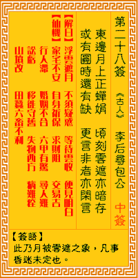

观音灵签第二十八签 【包公寻李后】 |
 | |||
东方月上正婵娟 顷刻云遮月半边 莫道圆时还又缺 须教缺处复重圆 |
||||
| 【吉凶】 | 上上签 | 【宫位】 | 午宫 | |
| 【签语】 | 此卦月被云遮之象，凡事昏迷未定也。 | |||
| 【解曰】 | 浮云遮月 不须疑惑 等待云收 便见收获 | |||
| 【仙机】 | 此签家宅不安，自身祈保，求财阻，交易吉，行人滞，田蚕六畜不利，婚姻不合，六甲有惊，寻人难，讼亏，移徙守旧，失物西方，病难 痊，山坟改。 | |||
| 【详解】 | 月儿从东边初升正是最美的时候，突然之间乌云骤至将月亮遮蔽了半边;别说月正圆为何又遇缺，只待乌云过后缺处就会重圆。 浮云遮月，不得疑惑，得待云开，自见明月。此签月被云遮之象，凡事待时。 月被云遮之象。亦即是凡事。暂时且守旧。待时老。君汝之早年也。事事不遇之时。唯多年辛勤。终能入佳境。事事如意者。好景已迫眉睫。愿君多行善。亦即是言积德。以迓天庥者。君之目前即是浮云遮月不得疑惑。得待云开自见明月时。 此签有”幸得援手”之意。提醒当事人，凡事以礼相待。这个社会上有各式各样的人，生活在我们周遭，有些熟悉、有些陌生。但是，即使是几乎天天见面的同学或同事，也不代表我们就能够完全了解彼此的全部。也许你自以为熟悉的对方，也仅仅只是工作上的那一小部分。也许他们各有所长，只是没有表露出来。在待人处世上，应能不分贵贱、职位高低，以礼相待。勿起分别心，凡事一视同仁。现在你身边的任何一个人，日后都有可能成为你的贵人。 | |||
| 【典故】 | 宋朝真宗皇帝有刘、李二妃。李妃怀孕产子，被刘妃以狸猫换太子手法陷害，被打入冷宫受罪。十多年后，李妃因日夜哭泣，在痛苦中过 日子，最后双目失明。她听说包公是位公正廉洁的好官，几经辛苦，终于在天齐庙寻到包公，提出伸冤。《金丸记》传奇。《狸猫换太子》故事 | |||